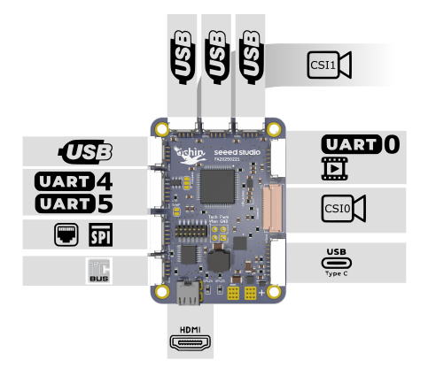

ochin_CM4v2 delivers industrial-grade flexibility in a compact footprint. With high-speed Ethernet, multiple USB ports, and support for Wi-Fi and CSI cameras, it's built for demanding real-time applications. But it doesn’t stop there — makers and professionals will love the easy access to UART, I²C, SPI, and GPIO headers, unlocking seamless integration with sensors, controllers, and custom hardware. Whether you're building an autonomous drone, a robotic arm, or an automation gateway, ochin_CM4v2 has the I/O to make it happen.
